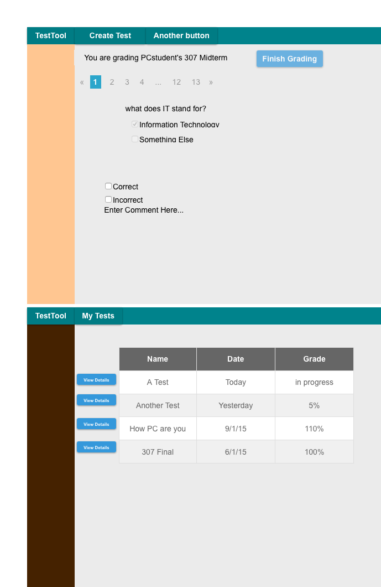

This scenario illustrates when a teacher grades an individual question on a student’s test. When a teacher selects a test and a student’s submission, Test Tool displays the dialog as shown.

Figure 1: Teacher View of Grading a Test
Teachers are required to mark each question as correct or incorrect.
"Finish Grading" is grayed out until all questions have been graded.
Teacher can optionally add comments to student answers.
Teacher can navigate through questions by selecting question number, or by pressing the arrows next to the test numbers.